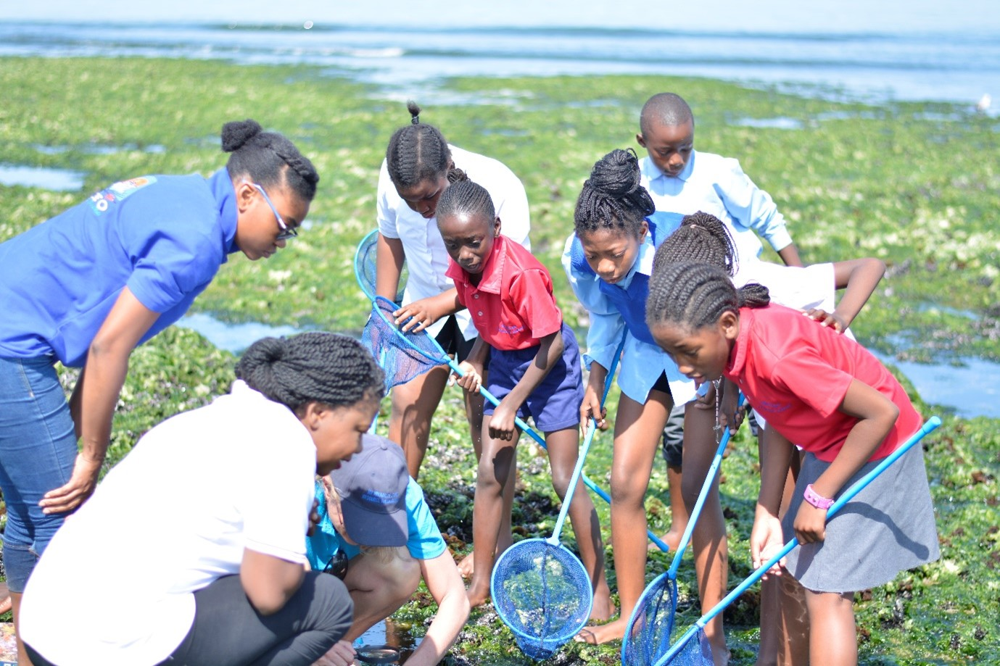
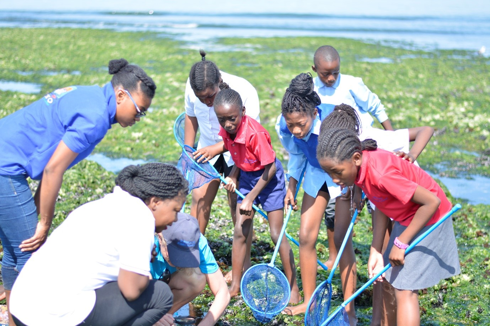
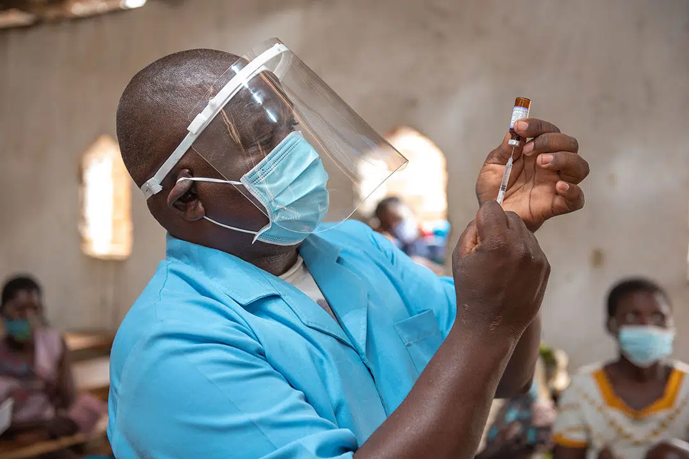
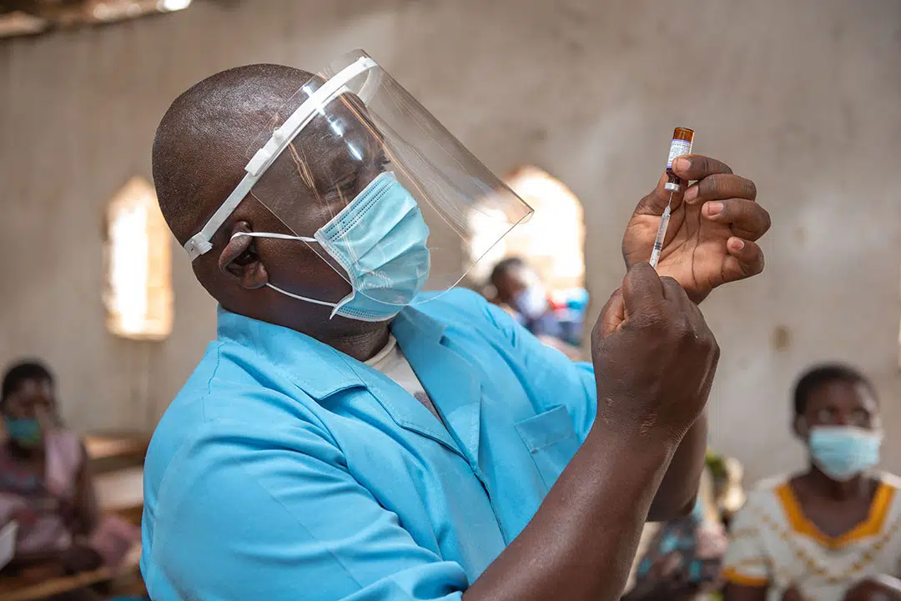

Our Mission
To create opportunities for growth and development in local communities by providing access to education, health services, and sustainable resources, ensuring a brighter future for all. We believe in empowering communities by creating opportunities that foster education, health, and sustainable development. We strive to uplift individuals and families through grassroots projects that address their most pressing needs.

 



 
